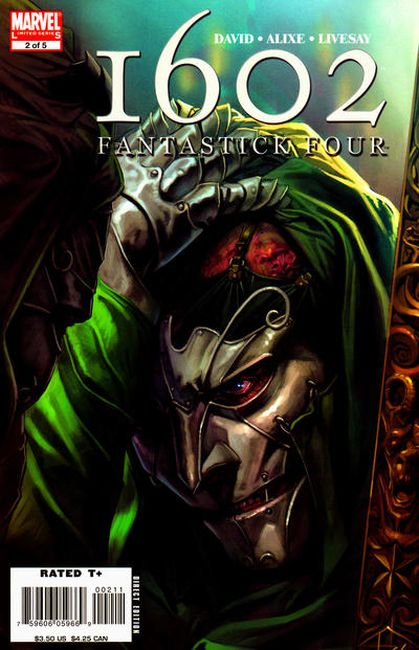
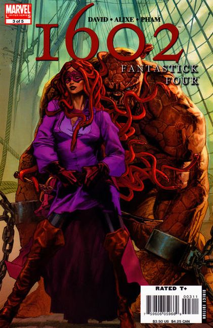
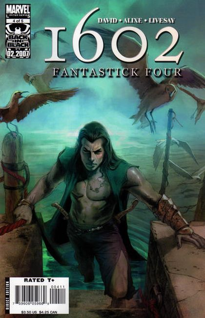
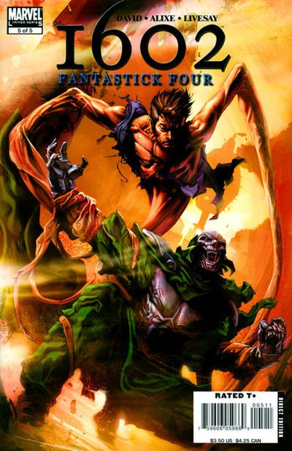

Doom returns! The Four from the Fantastik's greatest enemy has an insidious plan that takes them to the ends of the Earth in the eagerly awaited spin-off from Neil Gaiman's 1602. What does Doom want? Why doesn't Invisible Woman want to fight him? And what does Shakespeare have to do with it?

Count Otto Von Doom has a nefarious plan that only the Four from the Fantastick can thwart! But before they can thwart anything, they have to stop fighting each other.

The race to the end of the world speed's up as the Four from the Fantastick battle the Four Who Are Frightful and Count Otto von Doom!

At the end of the world is a man, NAMOR, King of Atlantis! But Atlantis is not under the sea in 1602. With both Doom and the Four from the Fantastick at his doorstep, what will King Namor do? The Four from the Fantastick face Otto von Doom and Namor in the stunning conclusion of MARVEL 1602: FANTASTICK FOUR!!! When the battle is over, will Atlantis still be standing? And will all four of our merry adventurers make it out alive?